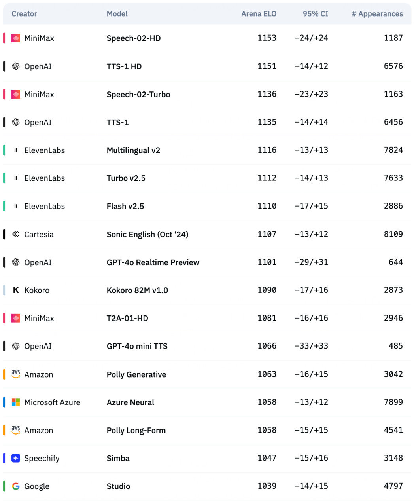
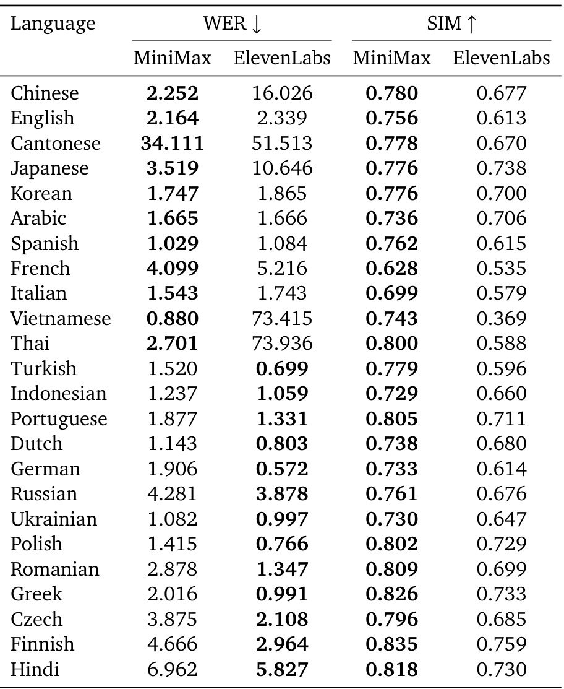
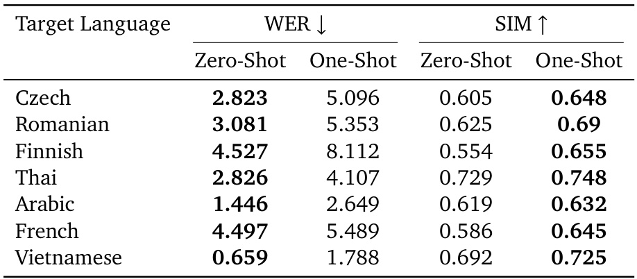
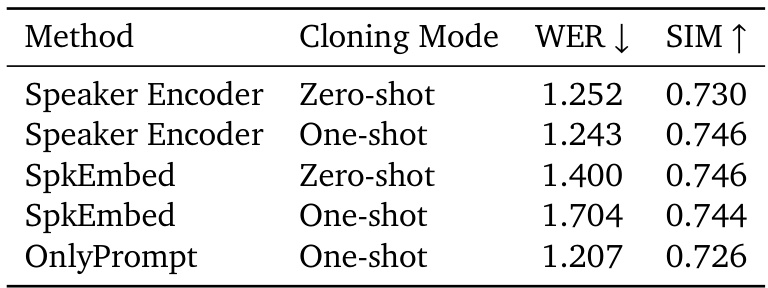

None
このセクションでは、論文で提案されている革新的な音声合成システムMiniMax-Speechの技術的な詳細について解説します。MiniMax-Speechは、特にゼロショット音声クローニングにおいて高い忠実度を実現することを目指して設計されています。システムは主に3つのコンポーネントから構成されています。
1. トークナイザ (Tokenizer)
テキストと音声を処理可能な形式に変換します。
2. 自己回帰Transformer (Autoregressive Transformer)
テキスト入力から離散的な音声トークンを生成します。
3. 潜在フローマッチングモデル (Latent Flow Matching Model)
音声トークンを高品質な音声波形に変換します。Flow MatchingモジュールとFlow-VAEモジュールから構成されます。
図1: MiniMax-Speechのアーキテクチャ概要
図1はMiniMax-Speech全体の構成を示しています。入力テキストと参照音声から、目標とする話者の声質を持つ音声が生成される流れです。
📝 トークナイザの詳細:
この音声トークナイザは、高い圧縮率を達成しつつ、十分な音響的詳細と意味情報を効果的に保持することができます。これにより、後段のモデルが高品質な音声を生成するための基盤を築きます。
以降では、自己回帰Transformerと潜在フローマッチングモデルについて詳しく見ていきましょう。
MiniMax-Speechでは、自己回帰Transformer (Autoregressive Transformer) (Vaswani et al., 2017) アーキテクチャを採用して、テキスト入力から離散的な音声トークンを生成します。このシステムの特に優れている点は、高い忠実度での話者クローニング、とりわけゼロショット音声クローニングです。ゼロショット音声クローニングとは、ターゲット話者の書き起こしされていない音声セグメントを1つだけ用いて、その話者特有の音色やスタイルを模倣した音声を合成する技術です。
この強力なゼロショット能力を実現するために、MiniMax-Speechは (Betker, 2023) に着想を得た学習可能な話者エンコーダを組み込んでいます。他の音声合成モデルが事前に訓練された話者エンコーダを使用するのに対し (Du et al., 2024a; Łajszczak et al., 2024)、MiniMax-Speechのエンコーダは自己回帰Transformerと共同で訓練されます。
共同最適化の利点: ✨
話者エンコーダは、参照音声（生成対象の目標音声とは異なる）から、声の音色 (vocal timbre) や 韻律スタイル (prosodic style) といった顕著な話者固有の特徴を抽出します。可変長の音声セグメント（音声プロンプトとして機能）は、このエンコーダによって固定サイズの条件ベクトル (conditional vector)に変換されます。このベクトルが、自己回帰モデルが目標のアイデンティティを持つ音声を生成する際のガイドとなります。
ゼロショット学習とワンショット学習のアナロジー
MiniMax-Speechの音声クローニング能力は、GPT-3 (Brown et al., 2020)のような大規模言語モデル (LLM) で見られる能力から適応された、ゼロショット学習とワンショット学習のパラダイムを通して理解するのが最も適切です。
LLMでは、事前の例なしに指示のみに基づいてタスクを実行することを指します。
LLMでは、モデルをガイドするために1つ（または少数）の文脈内例を提供することを指します。
これらの概念をTTSに適応させると以下のようになります：
MiniMax-Speechの核となる強み
この主要モードでは、MiniMax-Speechは、声の特徴を定義するために参照音声セグメントのみを使用して、ターゲット話者の声で音声を合成します（図2b参照）。重要なのは、推論時にプロンプトとしてその話者の声とテキストがペアになった明示的な例は提供されず、話者固有のファインチューニングも行われない点です。参照音声自体が、望ましい声の音色とスタイルのための主要な「指示」として機能します。
オプションの機能強化
ゼロショットの基盤の上に構築され、このモードは追加の明示的な例を提供することでクローニングの忠実度を高めます。具体的には、ターゲット話者からのペアになったテキスト音声サンプルが、参照音声から派生した標準的な話者埋め込みと共に「文脈内」プロンプトとして供給されます（図2c参照）。このアプローチは、LLMにおけるワンショットプロンプティング戦略を反映しており、VALL-E (Wang et al., 2023a)、CosyVoice 2 (Du et al., 2024b)、SeedTTS (Anastassiou et al., 2024)などの先行研究の技術に類似しています（ペアになったテキスト音声サンプルを必要とするこれらのプロンプティング方法は図2aに示されています）。
注意: これらの先行モデルはしばしば「ゼロショット」と記述されますが、話者条件付けにペアになったテキスト音声プロンプトに依存しているため、我々のより厳密な定義によれば「ワンショット」メソッドに分類されます。対照的に、我々の「内在的ゼロショット (intrinsic zero-shot)」アプローチ（図2b）は、付随するテキストプロンプトなしに、書き起こしされていない参照音声セグメントを排他的に利用して話者の特徴を導き出します。
図2: AR Transformerにおける異なる音声クローニングアプローチ。点線は提供されたテキスト音声ペアの例を表します。
図2は、音声クローニングの異なるアプローチを示しています：
オプションのワンショットプロンプティングは特定のシナリオでより細かいスタイルの手がかりを提供できますが、システムのアーキテクチャは基本的に強力で柔軟なゼロショット合成のために設計されています。MiniMax-Speechの条件付けエンコーダは両方の方法をシームレスにサポートしますが、その真の革新性は、ペアデータやファインチューニングに依存せずに高品質な音声クローニングを可能にすることにあります。学習可能な話者エンコーダによって促進されるこのゼロショット中心設計の利点は多岐にわたります:
テキスト不要の参照 (Text-Free Reference)
参照音声波形のみで動作するため、ターゲット話者の音声のテキスト書き起こしが不要です。これにより、話者のアイデンティティが純粋に声の特徴から学習され、特定の参照発話の意味内容から分離されます。
豊かな韻律変動と柔軟なデコーディング (Rich Prosodic Variation and Flexible Decoding)
エンコーダによって抽出された話者条件のみに基づいて条件付けされるゼロショットアプローチは、多様な韻律変動を持つ音声の生成を可能にします。モデルは特定のテキスト音声プロンプトの韻律に制約されず（ワンショット法のように）、より広いデコーディング空間と、ターゲット話者のユニークな声のアイデンティティへの高い忠実度を維持しつつ自然な表現範囲を示す出力に繋がります。
ロバストな多言語合成 (Robust Cross-Lingual Synthesis)
話者エンコーダは言語に依存しない声の特徴を捉え、多言語合成を強化します。これは、参照言語がターゲット言語と異なる場合や意味内容が一致しない場合に苦戦する、テキスト音声参照ペアに依存するプロンプトベースのクローニング方法よりも優れています。
拡張性のための基盤 (Foundation for Extensibility)
エンコーダによって提供されるロバストで分離された話者表現は、セクション4で詳述するように、様々な下流アプリケーションのための柔軟な基盤として機能します。感情制御、T2V（Text-to-Voice）、PVC（Professional Voice Cloning）のようなタスクは、ベースモデルを根本的に変更することなく、このコアとなる話者アイデンティティ表現を活用できます。
MiniMax-Speechでは、フローマッチングモデル (Flow Matching Model) は、強力な文脈モデリング能力を持つ Transformer (Vaswani et al., 2017) アーキテクチャを利用します。このフローマッチングモデルは、メルスペクトログラムではなく、音声から訓練されたエンコーダ・デコーダモジュールから抽出される連続的な音声特徴（潜在変数, latent）の分布をモデル化するように設計されています。
エンコーダ・デコーダモジュールの訓練
このエンコーダ・デコーダモジュール（エンコーダがこれらの連続的な音声特徴を抽出し、デコーダは通常ニューラルボコーダ (Kalchbrenner et al., 2018; Kumar et al., 2019; Valin and Skoglund, 2019; van den Oord et al., 2016; Yang et al., 2021)）を訓練する際には、KLダイバージェンス (KL divergence) が制約として用いられます。これにより、潜在分布が予測しやすく、よりコンパクトになります。さらに、潜在特徴抽出モジュール（エンコーダ）とニューラルボコーダ（デコーダ）の共同訓練により、潜在特徴からの波形再構成誤差はメルスペクトログラムからのものと比較して小さくなり、これが潜在特徴モデリングの限界を引き上げます。
図3: 提案された潜在フローマッチングアーキテクチャの概要。(a) Flow-VAEモデル。(b) Flow Matchingモデル。
図3(a) Flow-VAEモデル:
図3(a)は、エンコーダ・デコーダモジュールを最適化するために使用する提案されたFlow-VAEモデルを示しています。従来の変分オートエンコーダ (Variational Autoencoders, VAEs) は通常、潜在空間に標準正規分布を仮定します。
対照的に、Flow-VAEはフローモデル (Flow Model) (Dinh et al., 2015, 2017; Kingma and Dhariwal, 2018; Rezende and Mohamed, 2015) を導入します。フローモデルは、一連の可逆なマッピングを使用して潜在空間を柔軟に変換し、データ内の複雑なパターンをより正確に捉えるためのより表現力豊かな事後分布を学習できます。
この融合ソリューションは、VAEのデータの初期モデリング能力とフローモデルの複雑な分布への正確なフィッティング能力を最大限に活用できます。これにより、データ内の複雑な構造と分布特性をより良く捉え、データモデリングの精度を向上させ、従来のVAEモデルを大幅に上回る性能を発揮します。
VAE (変分オートエンコーダ): データを低次元の潜在空間に圧縮するエンコーダと、潜在表現からデータを復元するデコーダからなる生成モデル。潜在変数の分布に事前分布（通常は正規分布）を仮定し、変分推論を用いて学習します。
Flow Model (フローモデル): 単純な確率分布（例：正規分布）から複雑なデータ分布への可逆な変換を学習するモデル群。Normalizing Flowとも呼ばれます。ヤコビアンの行列式を計算することで、変換後の分布の確率密度を正確に求めることができます。
図3(b) Flow Matchingモデル:
Flow Matchingモデルの音質と音色の類似性を向上させるために、CosyVoice 2 (Du et al., 2024b) に着想を得て、図3(b)で言及されているように、グローバルな音色情報とプロンプト情報の両方を組み込んでいます。
その結果、推論段階では、私たちのモデルはゼロショットとワンショットの両方の合成モダリティをサポートします。図中の \( c \) はAR Transformerの出力（音声トークン）、\( x_t \) は確率密度パス上のタイムステップ \( t \) における中間状態です。これらの情報はConv1d & Upsample層を経て、Transformer Blockに入力され、最終的に連続音声特徴 \( z \) が生成されます。この \( z \) がFlow-VAEのデコーダによって音声波形に変換されます。
Flow-VAEモデルでは、その目標は事後エンコーダ (posterior encoder)（Flow-VAEモデルのエンコーダ）に十分な情報を提供することです。そのため、メルスペクトログラムの代わりにターゲット音声の波形 \( x \) を入力として使用し、次にフローモデル \( f_{\theta} \) を適用して正規分布を標準正規分布に可逆的に変換します。
KLダイバージェンスは以下のように定義されます:
ここで、
変分事後分布 \( q_{\phi}(\tilde{z}|x) \) は以下のように表されます:
そして、エンコーダの出力する潜在変数 \( z \) は、平均 \( \mu_{\phi}(x) \)、標準偏差 \( \sigma_{\phi}(x) \) の正規分布に従うとモデル化されます。
ここで、\( \tilde{z} \) はこのエンコーダ出力 \( z \) を指します（論文の表記揺れを考慮）。フローモデル \( f_{\theta}(\tilde{z}) \) は、このエンコーダが出力した正規分布に従う潜在変数 \( \tilde{z} \) を変換します。変換後の変数が、平均 \( \mu_{\phi}(x) \)、標準偏差 \( \sigma_{\phi}(x) \) の正規分布 \(N(\cdot ; \mu_{\phi}(x), \sigma_{\phi}(x))\) に従うようにモデル化されます。 実際には、この式は少し混乱を招く可能性があります。より標準的なFlow-VAEの定式化では、エンコーダは \(z\) を出力し、\(z \sim q_{\phi}(z|x)\) となります。そして、フローモデル \(f_{\theta}\) はこの \(z\) を \( \tilde{z} = f_{\theta}(z) \) へと変換し、この変換後の \( \tilde{z} \) が事前分布 \( p(\tilde{z}) \) (例えば標準正規分布) に従うように学習します。その場合、KLダイバージェンスの \(q_{\phi}(z|x)\) は、エンコーダからの出力分布であり、\(\log q_{\phi}(z|x)\) は \(\log p(\tilde{z}) - \log \left| \det \frac{\partial f_{\theta}(z)}{\partial z} \right|\) として計算されます。 しかし、論文の式 (2) は、フローモデル \(f_{\theta}\) が \( \tilde{z} \) を入力とし、その出力 \( f_{\theta}(\tilde{z}) \) が正規分布 \( N(\cdot ; \mu_{\phi}(x), \sigma_{\phi}(x)) \) に従うとしています。そして、\( \left| \det \frac{\partial f_{\theta}(\tilde{z})}{\partial \tilde{z}} \right| \) は確率変数の変換に伴うヤコビアンの行列式の絶対値です。これは、確率密度関数の変換において体積要素の変化を補正するために必要です。
事前分布 \( p(\tilde{z}) \) は標準正規分布です:
ここで、\( N(\tilde{z}; 0, I) \) は平均が0ベクトル、共分散行列が単位行列 \( I \) である多変量正規分布を示します。
実験におけるKL損失の計算 (図3(a)参照)
私たちの実験では、図3(a)に示すように、フローモデルはエンコーダによって出力された正規分布 (エンコーダ出力 \(z\)) を一連の可逆変換を通じて変換します。最終的に、フローモデルによって出力された分布と標準正規分布との間のKL損失を計算します。 （論文の記述では、エンコーダが出力する分布 \(N(\mu_{\phi}(x), \sigma_{\phi}(x))\) を \(z\) とし、この \(z\) をフローモデル \(f_{\theta}\) が \( \tilde{z} = f_{\theta}(z) \) に変換し、この \( \tilde{z} \) と標準正規分布 \(N(0,I)\) との間のKLダイバージェンスを計算する、と解釈するのが一般的です。）
この方法により、エンコーダの出力は標準正規分布ではなく、より一般的な正規分布に制約されることができます。これにより、エンコーダの情報表現能力が向上します。つまり、潜在変数が必ずしも平均0、分散1の単純な分布に従う必要はなく、より柔軟な分布を取れるようにすることで、エンコーダがデータからより豊かな情報を捉えられるようにする、ということです。
KLダイバージェンスの役割
KLダイバージェンスを最小化するように学習することで、エンコーダが生成する潜在変数の分布 \(q_{\phi}(\tilde{z}|x)\) が、事前分布 \(p(\tilde{z})\)（ここでは標準正規分布、またはフローモデルを介して変換された後の分布が標準正規分布になるような元の分布）に近づくように促します。これは正則化項として機能し、過学習を防ぎ、より滑らかで構造化された潜在空間の学習を助けます。Flow-VAEの場合、フローモデルの導入により、この \(q_{\phi}(\tilde{z}|x)\) はより複雑で表現力豊かな分布をモデル化できるようになり、結果として \(p(\tilde{z})\)（ターゲットの単純な分布）へのマッピングがより効果的に行われます。
このセクションでは、提案モデルである MiniMax-Speech の性能を多角的に評価します。論文の核心となる実験結果がここで詳細に報告されます。主な評価軸は以下の通りです：
音声クローニングの忠実度
ゼロショットおよびワンショット両方のアプローチで、客観的な指標を用いて評価します。
知覚的な自然さ
人間による大規模な嗜好テストを通じて評価します。
多言語・クロスリンガル合成能力
多様な言語間で厳密にテストします。
さらに、スピーカー条件付けの方法論やFlow-VAEフレームワークといった、モデルの重要なアーキテクチャ設計が性能に与える影響を明らかにするためのアブレーション研究も行います。
このセクションの目的は、MiniMax-Speechが既存手法と比較してどの程度優れているか、そして提案されている各要素がどのように機能しているかを具体的に示すことです。大学院生の皆さんにとっては、モデル評価の標準的な方法論や、新しい技術の有効性をどのように検証するのかを学ぶ良い機会となるでしょう。
MiniMax-Speechの訓練には、32言語にまたがる大規模な多言語音声データセットが使用されました。データセットの品質はモデル性能に直結するため、収集プロセスには細心の注意が払われています。
Automatic Speech Recognition (ASR): 自動音声認識。人間の話し言葉をコンピュータが認識し、テキストデータに変換する技術です。
Voice Activity Detection (VAD): 音声区間検出。オーディオ信号の中から人間の音声が含まれる区間を特定する技術です。
タイムスタンプ: 時刻情報。音声データ中の特定のイベント（単語の開始・終了など）が発生した時刻を記録したものです。
多話者検証モデル (Multi-speaker Verification Model): 複数の話者の音声データから、それぞれの話者の声の特徴を学習し、未知の音声がどの話者のものかを検証（または識別）するモデルです。
音声クローニングの忠実度を定量的に評価するために、WER (Word Error Rate) と SIM (Speaker Similarity) という2つの客観的指標が用いられました。評価には、SeedTTS-eval (Anastassiou et al., 2024) というテストセットが使用されています。
SeedTTS-evalデータセットは、以下の2つのサブセットで構成されています：
これらの各サンプルには、参照音声（クローニングの元となる声）と、それと同一話者の正解音声（比較対象）が含まれています。
WER (Word Error Rate): 単語誤り率。低いほど良い（明瞭度が高い）。
SIM (Speaker Similarity): 話者類似度。高いほど良い（声が似ている）。
これらのASRモデルと話者検証モデルの選択は、Seed-TTS-evalテストセットの確立された方法論に準拠しています。
表1 | Seed-TTSテストセットにおける客観評価指標。太字は各列の最良値、下線は次善値を示す。MiniMax-Speechの両クローニング手法では参照音声が話者エンコーダへの入力として利用され、ワンショットパラダイムではさらにプロンプト例としても機能する点に注意。
表1の読解ポイント
表1は、MiniMax-Speechの音声クローニング性能を他の主要なモデル（Seed-TTS, CosyVoice 2）や正解音声（Ground Truth）と比較した結果を示しています。
WER (単語誤り率) について:
主観評価との関連:
SIM (話者類似度) について:
MiniMax-Speechを実世界のシナリオで包括的に評価するため、モデルはArtificial Arena2という公開TTSモデルリーダーボードに提出されました。Artificial Arenaは、ユーザーが様々なモデルの音声サンプルを聴き比べて行う人間による嗜好判断から導出されるELOスコアを用いてモデルをランク付けします。
ELOレーティングシステムは、元々チェスなどの二人対戦ゲームでプレイヤーの実力を測るために開発された評価方法です。対戦結果に基づいて各プレイヤーのレーティング（スコア）を更新します。TTSモデルの評価では、2つのモデルが生成した音声をランダムに提示し、どちらがより自然か、好ましいかをユーザーに選んでもらいます。多くの比較結果を蓄積することで、各モデルの相対的な品質を示すELOスコアが算出されます。
この厳しい評価において、MiniMax-Speechからの全ての音声サンプルは、その高度なゼロショット話者クローニング能力を使用して生成されました。このアプローチは非常に柔軟性が高い一方で、最先端（SOTA）の品質を達成するには大きな課題を伴います。
図4 (論文中ではFigure 4と記載されていますが、提供されたMarkdownではtable2.pngとなっています) | Artificial Analysis Speech Arena リーダーボード。MiniMax-Speechは「Speech-02-HD」としてリストされています。
リーダーボード結果のポイント (図4/表2参照)
MiniMax-Speechは32言語での合成をサポートしています。その多言語性能を評価するため、24言語からなる専用のテストセットが構築されました。
MiniMax-Speechの性能は、多言語合成においてElevenLabs Multilingual v2モデルと比較評価されました。両モデルからの音声は、ゼロショット音声クローニングを使用して合成されました。評価指標と方法論は、セクション3.2で説明されたもの（WERとSIM）と一貫しています。中国語を除く全ての言語に対して、テキスト認識にはWhisper-large-v3モデルが使用されました。
表2 (Markdownではtable3.png) | 多言語テストセットにおける客観評価指標。
表2 (多言語評価) の読解ポイント
WER (単語誤り率) について:
SIM (話者類似度) について:
MiniMax-Speechの話者エンコーダアーキテクチャから生じる重要な利点の一つは、クロスリンガル音声合成の固有のサポートです。これにより、任意の特定のスピーカーに対して、モデルがサポートする全ての言語で音声を合成することが可能になります。この能力には、主に2つの側面が寄与しています。
MiniMax-Speechは、ゼロショット話者クローニングのために、対象話者からの短い音声セグメントのみを必要とし、対応する書き起こし（トランスクリプション）は不要です。この最小限のデータ要件は、新しい声をクローニングするための参入障壁と運用上の複雑さを大幅に低減します。
これは、書き起こされた参照音声を必要とする一部のワンショットクローニングモデル（例: Anastassiou et al., 2024; Du et al., 2024b）とは対照的です。書き起こしへの依存は、クローニングプロセスを複雑にするだけでなく、書き起こしエラーがクローン音声の品質に悪影響を与えるリスクも伴います。MiniMax-Speechのアプローチは、ゼロショットクローニングで書き起こしを不要にすることで、ワークフローを簡素化し、不正確な書き起こしから生じる潜在的な問題を軽減します。
話者エンコーダモジュールは、主に声の音色（ティンバー）を捉え、テキストのセマンティック情報（意味情報）をほとんど含まない条件付きベクトルを抽出します。この特性により、モデルは声の音色を言語的内容から切り離し、その後それらを再結合することが容易になり、それによって各々の異なる声の音色がサポートされている全ての言語で発話できるようになります。
話者エンコーダによって可能になったクロスリンガル合成能力を検証するために、多言語テストセットの中国語話者を使用して評価が行われました。これには、これらの中国語話者が他の様々なターゲット言語でフレーズを発話する音声を合成することが含まれます。
表3 (Markdownではtable4.png) | MiniMax-Speechのクロスリンガル音声合成性能（ゼロショット vs ワンショット）。
表3 (クロスリンガル評価) の読解ポイント
ゼロショット vs ワンショット:
ワンショットの課題:
結論:
さまざまな話者条件付け（speaker conditioning）アプローチの有効性を評価するために、アブレーション研究が実施されました。この研究では、中国語音声データのかなりのサブセットで訓練された3つの異なるモデルが使用されました。
提案手法のアーキテクチャを実装。
事前訓練された話者検証モデル (Wang et al., 2023b) から抽出された話者埋め込み (Speaker Embeddings) を利用。
模範音声プロンプトのみを用いたワンショット学習戦略を採用。
これらの構成は、WERおよびSIM指標を使用して評価されました。
表4 (Markdownではtable5.png) | 話者条件付け手法に関するアブレーション研究。
表4 (話者条件付け評価) の読解ポイント
話者エンコーダの優位性:
SpkEmbed (事前学習埋め込み) との比較:
OnlyPrompt (プロンプトのみ) との比較:
学習可能な話者エンコーダのバランス:
ただし、話者エンコーダの参照音声は、AR Transformer合成のターゲット音声とは異なる必要があります。訓練中に同一の音声を使用すると、セマンティックリーケージ（意味情報の漏洩）が発生し、パフォーマンスが低下する可能性があります。
VAE (Variational Autoencoder) と Flow-VAE の性能を評価するために、2つの主要な側面で比較が行われました：ボコーダー再合成とTTS合成です。テストセットとして、Seed-TTS (Anastassiou et al., 2024) のオープンソースの中国語および英語テストセットから一部をランダムに選択しました。
Flow-VAEは、本論文で提案されている新しいコンポーネントです。従来のVAEでは潜在空間が標準正規分布に従うと仮定されることが多いですが、Flow-VAEはVAEにフローモデル（flow model）を統合します。フローモデルは、一連の可逆な写像を用いて潜在空間を柔軟に変換し、より表現力の高い事後分布を学習することで、データの複雑なパターンをより正確に捉えることができます。これにより、VAEの初期のデータモデリング能力とフローモデルの複雑な分布への精密な適合能力を最大限に活用し、データモデリングの精度を向上させ、結果として音声品質と話者類似性の向上を目指します。(詳細はセクション2.2参照)
VAEとFlow-VAEの波形再構築能力を比較するために、両モデルを使用して再合成を行いました。指標は、合成音声と元の音声を複数の次元で比較することによって計算されました。
TTSフレームワーク内でVAEおよびFlow-VAEから派生した潜在特徴の性能を評価するために、我々のデータのかなりのサブセットで、それぞれVAE潜在変数とFlow-VAE潜在変数に基づいてフローマッチングモデルを訓練しました。Seed-TTS (Anastassiou et al., 2024) のWERおよびSIM評価方法論に従い、ゼロショットとワンショットの2つの推論設定でテストデータを生成しました。
表5 (Markdownではtable6.png) | VAEとFlow-VAEによる再合成の客観的指標。SELF-SIMは合成音声と原音声の類似度、PROMPT-SIMは合成音声とプロンプト音声の類似度を表す。
表5 (ボコーダー再合成) の読解ポイント
表5に示されるように、Flow-VAEモデルは、評価された全ての指標においてVAEモデルに対して著しい利点を示しました。これは、Flow-VAEが元の音声波形をより忠実に再構築できることを意味します。
指標の例：LSD (Log-Spectral Distance), STOI (Short-Time Objective Intelligibility), PESQ (Perceptual Evaluation of Speech Quality), MCD (Mel Cepstral Distortion), SELF-SIM, PROMPT-SIMなど。具体的な指標は表自体を参照してください。
表6 (Markdownではtable7.png) | VAEとFlow-VAEによるTTS合成の客観的指標。
表6 (TTS合成) の読解ポイント
表6に計算されたWERとSIMスコアが示されています。ここでもFlow-VAEを用いた方が、ゼロショット・ワンショット両方で、中国語・英語両方で、WER・SIMともにVAEを用いた場合より良好な結果を示しています。
注目すべきは、VAEモデルと比較して、Flow-VAEはWERおよびSIM指標において利点があるだけでなく、合成された音声を聴取したところ、Flow-VAEは全体的な安定性において著しい利点を示したということです。論文著者は、デモリンクを通じて体験することを読者に奨励しています。
これは、客観的な数値だけでなく、聴感上の品質においてもFlow-VAEが優れていることを示唆しており、特に音声生成の安定性（途切れたり、不自然なノイズが入ったりしにくい）が向上している点が重要です。
MiniMax-Speechモデルの核心的な強みの一つは、統合されたスピーカーエンコーダーによって学習される、分離されていて堅牢な話者表現です。このスピーカーエンコーダーは、参照音声からテキストの書き起こしなしに純粋な声のアイデンティティを捉えることができます。この能力が、MiniMax-Speechに顕著な柔軟性をもたらし、様々な応用（ダウンストリームアプリケーション）への拡張を容易にしています。
このセクションでは、その具体的な拡張例として以下の3つを詳しく解説します:
LoRA技術を活用し、合成音声の感情を精密にコントロールします。
自然言語の記述に基づいて、任意で多様な声質を生成します。
特定話者の埋め込みを最適化し、合成品質と忠実度を高めます。
これらの拡張は、スピーカーエンコーダーが提供する安定かつ多目的な基盤の上に構築されています。それでは、各拡張機能について詳しく見ていきましょう。✏️
人間らしい自然な合成音声にとって、感情表現は非常に重要です。感情は主に、ピッチ（声の高さ）やデュレーション（音の長さ）といった韻律的特徴を通じて伝えられます。MiniMax-Speechでは、これらの特徴は主に自己回帰型トランスフォーマーによってモデル化されます。
このセクションでは、LoRA (Low-Rank Adaptation) (Hu et al., 2022) という技術を用いた新しい感情制御アプローチを提案します。この手法の目的は、合成音声の感情をより精密にコントロールすることです。
LoRA (Low-Rank Adaptation)とは？
大規模な事前学習済みモデルのファインチューニングを効率的に行う手法の一つです。モデル全体のパラメータを更新する代わりに、一部の層に小さな「アダプター」モジュール（低ランク行列）を追加し、そのアダプターのパラメータのみを学習します。これにより、計算コストと保存するパラメータ数を大幅に削減しつつ、特定のタスクやスタイルへの適応が可能です。
この手法は、自然言語による感情制御と比較して、より高い精度と安定性を実現します。
このアプローチの有効性は、訓練データに大きく依存します。訓練データは以下の形式で構成されます:
<参照音声, テキスト, ターゲット感情音声>
研究チームは、異なる種類の参照音声について調査しました：
出力される感情が参照音声の感情に過度に依存してしまい、直接的な感情制御が難しくなる傾向がありました。
🗣️参照(喜) + LoRA(怒) → 🗣️出力(喜の影響強し)
指定された感情カテゴリによる効果的な制御が可能になりました。
🗣️参照(無感情) + LoRA(怒) → 🗣️出力(怒り鮮明)
感情と語彙内容の分離
合成される感情がテキストの語彙内容（言葉の意味）から独立するようにするため、研究チームは同じテキストに対して複数の感情音声サンプルを収集しました（各サンプルは異なる感情を持つ）。これにより、モデルは同一の内容を様々な感情的抑揚で表現するよう学習し、学習された感情表現がテキストの意味に依存しないことが保証されます。
「ありがとう」 + 😊LoRA → 😊「ありがとう」
「ありがとう」 + 😢LoRA → 😢「ありがとう」
📌 LoRAベースアプローチの主な利点:
実験結果では、この手法が既存の方法論と比較して、感情表現の精度と自然さにおいて顕著な向上を達成し、より鮮やかで魅力的な発話を生み出すことが示されています。
既存の多くのTTS（Text-to-Speech）手法では、望ましい声質で音声を生成するために、その特定声質の参照音声サンプルを提供する必要があります。この要件は、システムの運用上の柔軟性を制限する可能性があります。
これに対し、本論文ではT2V (Text to Voice) フレームワークを導入します。このフレームワークは、自由形式の自然言語記述と構造化されたタグ情報を独自に統合する点が特徴です。これは、既存の声をクローニングするのに優れている参照音声駆動のスピーカーエンコーダーを補完するものであり、非常に柔軟で制御可能な声質生成を可能にし、TTSシステムの汎用性を大幅に向上させます。
まず、話速、性別、言語、ピッチ、音量などの属性を含む高品質な音声データセットを収集・整備しました。これらの属性は、Spark-TTS (Wang et al., 2025) に着想を得て、離散化されました。
例：ピッチはヘルツ値に応じて6つのビン（段階）[0, 1, 2, 3, 4, 5] に分割されました（0は「不明」を示す）。
これらの構造化された属性は、テキスト記述および音声データと組み合わされ、テキストと音声のペアからなるアライメントされたコーパスを形成します。
[テキスト記述 (例: "温かい声"), 構造化タグ (例: 性別=女性, ピッチ=3), 音声データ 🔊]
次に、ARトランスフォーマーとフローマッチングモデルから声質表現を抽出します。これらの高次元の特徴量は、主成分分析 (PCA) (Maćkiewicz and Ratajczak, 1993) を用いて128次元に圧縮されます。これにより、主要な声質特性を保持しつつ、これらの表現を予測する複雑さが軽減されます。
PCA (主成分分析) とは？
多変量データ（多くの特徴量を持つデータ）を、情報の損失を最小限に抑えながらより低い次元の空間に縮約するための統計的手法です。最も分散が大きい方向（主成分）を見つけ出し、データをその方向に射影します。これにより、データの冗長性を減らし、本質的な特徴を捉えることができます。
圧縮された声質表現は、構造化属性およびテキスト記述と共に、コンパクトな声質生成モデルに入力されます。このモデルは、自然言語の声質記述と離散的な音声属性を、前述の圧縮された声質表現空間にマッピングするように訓練されます。
訓練フェーズでは、ランダムマスキング拡張メカニズムが導入されました。テキスト記述内の主要な意味を持つ単語が、所定の確率でランダムにマスクされます（隠されます）。これにより、不完全な入力に対するモデルの堅牢性が向上します。
例: 「暖かく、中年の女性の声」 → 「❓、❓女性の声」
この提案されたフレームワークは、自由形式のテキスト記述と構造化されたタグパラメータを組み合わせることで、多目的な声質生成システムを確立します。このシステムは、テキスト記述と音声由来の声質表現を効果的に統合して声質を制御し、ユーザーが自然言語を用いて望ましい声の特性（例：「暖かく、中年の女性の声で、少し早口」）を生成できるようにします。これにより、音声複製シナリオの柔軟性が大幅に向上します。🗣️✨
MiniMax-Speechモデルの学習可能なスピーカーエンコーダーは、ゼロショット音声クローニングタスクにおいて高い柔軟性をもたらすだけでなく（テキストに依存しない操作と純粋な声のアイデンティティを捉える能力のため）、特定の話者に合わせて効率的かつ迅速にパラメータをファインチューニングするための合理的な経路を提供します。
現代のPEFT (Parameter-Efficient Fine-Tuning) 手法 (Li and Liang, 2021; Liu et al., 2021) に着想を得て、研究チームは新しいファインチューニング戦略を導入します。この戦略は、特定話者の声のアイデンティティをカプセル化する条件付き埋め込み (conditional embedding)（最初はスピーカーエンコーダーの声特性理解から導出される）を、学習可能なパラメータのセットとして概念化します。対象話者のファインチューニング段階では、この専用の埋め込みが最適化され、既存のスピーカーエンコーダーの代わりとなります。
特定の話者の声の特徴（声質、話し方など）を数値ベクトルとして表現したものです。この埋め込みベクトルをモデルに入力することで、生成される音声にその話者特有の「声の個性」を付与することができます。PVCでは、この埋め込みベクトル自体を学習対象とします。
📌 PVCの具体的なプロセス:
PVCの背後にある論理 (Rationale)
PVCの目的は、スピーカーエンコーダーによって確立された潜在空間内で話者表現を洗練させることです。スピーカーエンコーダーはゼロショット音声クローニングのために参照音声から重要な話者情報を巧みに捉えますが、特定の話者に対して生成する条件付き埋め込みは、その話者の十分な音声データが利用可能であれば、精度向上のためさらに最適化できます。
コンパクトな条件付き埋め込みのファインチューニングは、既によく汎化されたスピーカーエンコーダー全体を最適化するよりも、扱いやすく、個々の話者への調整においてより大きな柔軟性を提供します。
実験により、適切なハイパーパラメータ調整を行うことで、このPVCアプローチは、対象話者のユニークな声質への忠実度が向上し、全体的な知覚品質が優れた音声合成を可能にすることが実証されています。これは特に、強いアクセントや特徴的な声の特性を持つ話者において顕著です。
📈 PVCの利点: スケーラビリティと効率性
各話者の適応には単一のベクトル埋め込みの最適化のみが必要なため、潜在的に数千の異なる話者に対するファインチューニングとデプロイが容易になります。
基盤モデルのコアアーキテクチャを変更したり、話者ごとに完全な個別モデルをデプロイしたりする必要がありません。
教師ありファインチューニング（SFT）やLoRAのような手法と比較しても、提案手法は訓練の複雑さを著しく抑制し、計算リソースの消費を削減します。
同時に、合成音声の話者類似性と自然さの両方で向上が保証され、実世界の応用における優れた実用性と拡張性が強調されます。
例えば、教育分野での応用では、特定の教師の声に合わせてターゲットを絞ったファインチューニングを行うことができます。これにより、教材を豊かにし、学習者のエンゲージメントを高めるパーソナライズされた音声コンテンツを効率的に生成することが可能になります。👩🏫📚
この論文では、自己回帰型Transformerをベースとした革新的なテキスト音声合成（TTS）モデル、MiniMax-Speech を提案しました。この「結論」セクションでは、本研究で達成された主要な成果、既存の音声合成技術に対するMiniMax-Speechの優位性、そして今後の研究開発が目指す方向性について、分かりやすくまとめて解説します。✏️
これまでの高性能なTTSモデル、特に「まるで本物の人間のような声」を「どんな人の声でも即座に」（頑健なゼロショット音声クローニング）再現し、かつ「非常にクリアで自然な音声」（高忠実度な音声合成）を作り出すことを目指すものは、いくつかの大きな課題を抱えていました。
多くのモデルでは、新しい声で音声合成を行う際に、その声の持ち主が話している音声データ（参照音声）だけでなく、その音声が「何を話しているか」というテキスト情報（文字起こし）が必須でした。これが以下のような制約を生んでいました：
音声を作り出す部分（生成コンポーネント）の性能限界から、以下の点で満足のいく結果が得られにくいという問題もありました：
これらの根深い課題を解決するために、MiniMax-Speechは2つの画期的な技術革新を導入しました。これらがMiniMax-Speechの強さの秘密です！
参照音声からテキスト情報なしで、話者独特の「声色（音色）」を賢く抽出します！
フローマッチングという仕組みの中に新開発のFlow-VAEを組み込み、音声生成の「情報表現力」を飛躍的に高めます！
この学習可能な話者エンコーダは、参照となる音声データ（例：数秒間の誰かの話し声）さえあれば、その人の声の特徴、特に「音色」を的確に捉えることができます。最も重要なのは、「何を話しているか」というテキスト情報が一切不要である点です！ 🚫📝
もう一つの秘密兵器、Flow-VAEアーキテクチャは、音声が生成される過程で扱われる「情報の質と量（情報表現能力）」を格段にリッチにします。
これらの革新技術を組み合わせることで、MiniMax-Speechはなんと32もの言語での音声合成を高いレベルでサポートします。
客観的な評価（数値データに基づく評価）と主観的な評価（人間が実際に聞いて判断する評価）の両方で、既存の最高水準（SOTA: State-Of-The-Art）の性能を達成したことが実証されています。
特に、音声クローニングに関する評価指標でトップクラスの結果を出し、さらに公開されているTTSモデルの性能を競うTTS Arenaリーダーボードで第1位を獲得しました！これは非常に大きな成果です。
学習可能な話者エンコーダがもたらす柔軟性のおかげで、MiniMax-Speechは様々な応用が可能です。論文では以下の応用例が示されています：
これらの応用例は、MiniMax-Speechが単に音声を生成するだけでなく、感情豊かで、コントロール可能、かつ高品質な音声合成を実現するための強力で多才なソリューションであることを示しています。
MiniMax-Speechは、音声合成技術における重要な進歩であり、その革新的なアプローチと実証された高性能により、今後のTTS研究開発に大きな影響を与えることでしょう。さらなる進化が期待されます！ 🎉
👋 みなさん、こんにちは！このセクション「A. Contributors」は、このMiniMax-Speech技術レポートの作成に貢献した方々を紹介するためのものです。
論文や技術レポートでは、誰がその成果に関わったのかを明確に示すことがとても大切です。これは、研究の透明性を高め、それぞれの貢献を正当に評価するために行われます。ちょうど、映画のエンドロールで製作スタッフの名前が流れるのに似ていますね！🎬
このレポートでは、貢献者の方々はアルファベット順 (alphabetical order) で記載されています。これは、貢献者間に特定の序列（例えば、貢献度が高い順など）を設けず、公平性を保つための一般的な方法です。
(お名前の最初の文字で順番に並んでいます)
このMiniMax-Speechという素晴らしい音声合成技術に関するレポートは、以下の20名の専門家の方々の協力によって作成されました。まさにチームの力の結晶ですね！✨
Bowen Zhang
Congchao Guo
Geng Yang
Hang Yu
Haozhe Zhang
Heidi Lei
Jialong Mai
Junjie Yan
Kaiyue Yang
Mingqi Yang
Peikai Huang
Ruiyang Jin
Sitan Jiang
Weihua Cheng
Yawei Li
Yichen Xiao
Yiying Zhou
Yongmao Zhang
Yuan Lu
Yucen He
まとめ
このセクションはシンプルですが、科学技術コミュニティにおける協力と認知の重要性を示しています。各貢献者の名前を挙げることで、MiniMax-Speechという成果が個々の努力の集合体であることを明確にしています。研究の世界では、このような「誰が関わったか」という情報は、後々の引用や関連研究の追跡にも役立ちます。📌
大学院生として研究を進める皆さんも、将来論文を書く際には、共著者や協力者への感謝と敬意を込めて、貢献者リストを正確に記載することを忘れないでくださいね。📝